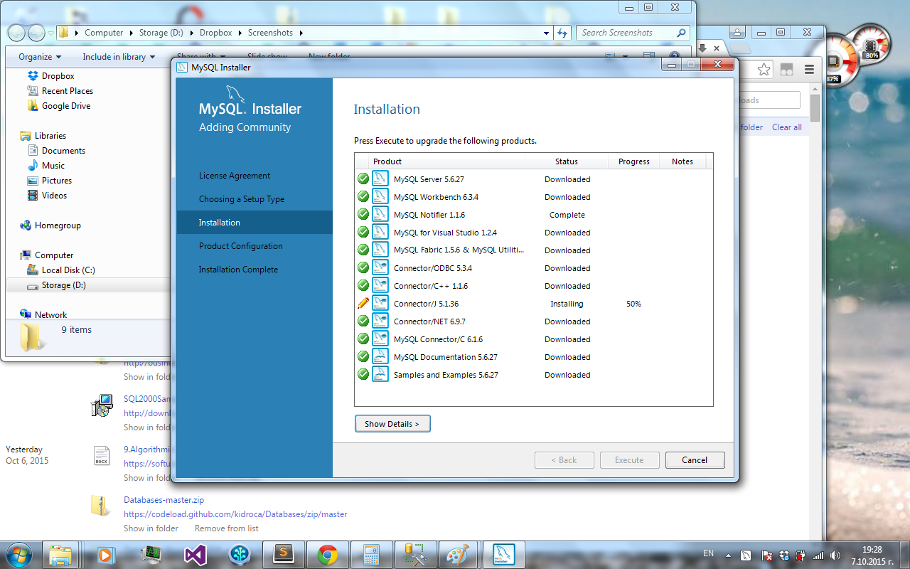

Download and install SQL Server Express
Install also SQL Server Management Studio Express (this could take some effort but be persistent).
Install also SQL Server Management Studio Express (this could take some effort but be persistent).
Use Windows authentication.

Create new login with permissions to connect to it. Execute the script install_pubs.sql to populate the DB contents (you may need slightly to edit the script before).

use the files Northwind.mdf and Northwind.ldf
A little help from a friend
Backup the database Northwind into a file named northwind-backup.bak and restore it as database named North.
Use [Tasks] > [Generate Scripts]
Ensure you have exported table data rows (not only the schema).
Execute the script in it to create the database and populate table data.
MySQL Community Server
MySQL Workbench
And the sample databases.
